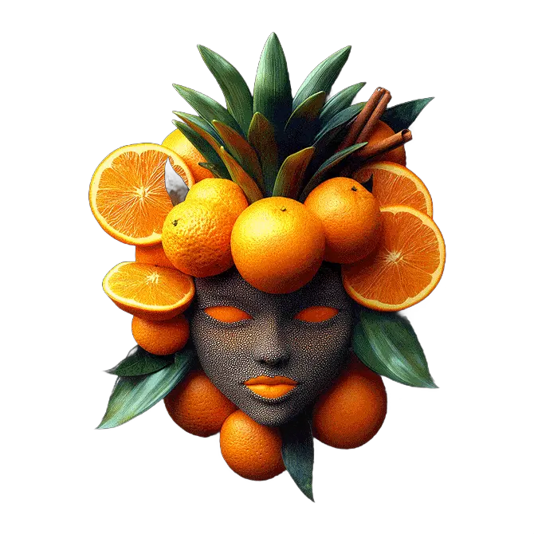
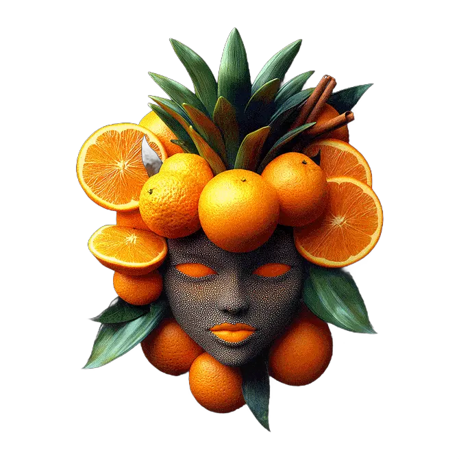
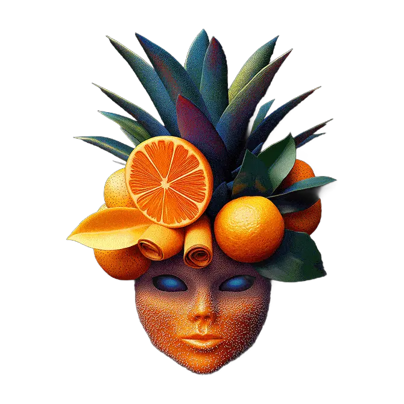
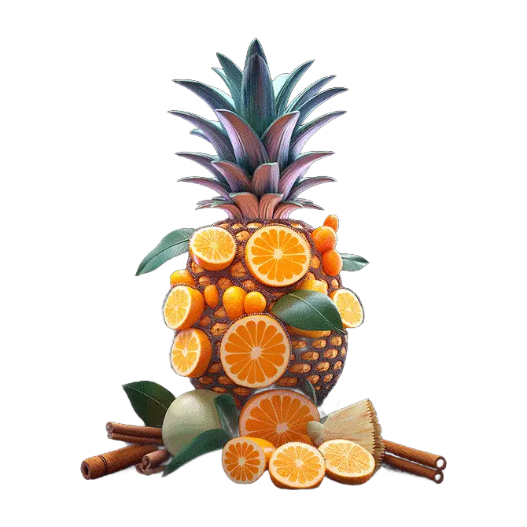
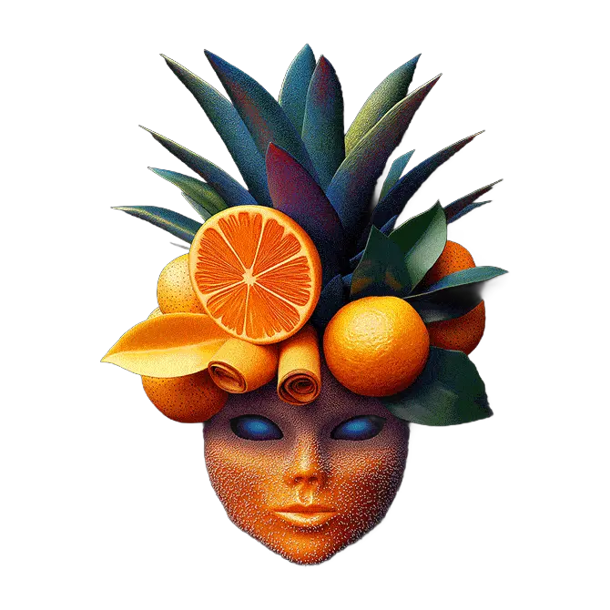
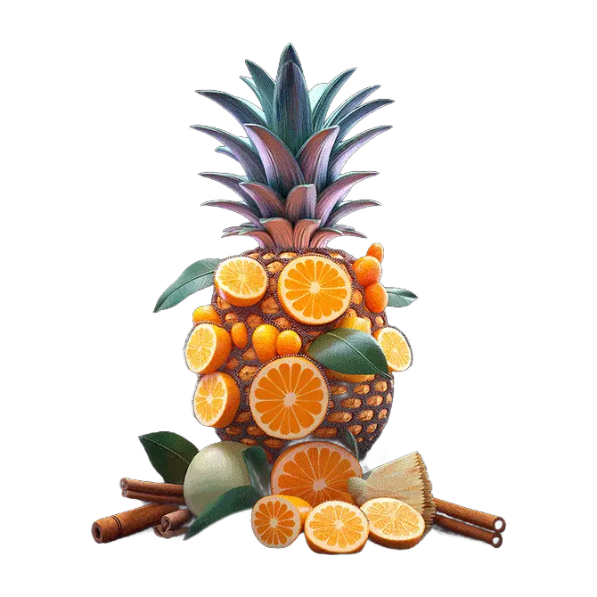

About us
Although the company itself was founded in 2025 as a startup, the story behind the creation of its products dates back to 2012. At that time, an individual fully dedicated to a healthy lifestyle, dietetics, and maximally beneficial and energy-balanced nutrition began crafting smoothies. The distinctive feature of these smoothies—beyond their wholesome, commonly used ingredients—was the enhanced nutritional value achieved by adding superfoods such as spirulina, turmeric, maca, açaí, and chia. These ingredients significantly boosted the health benefits of the smoothies, turning them into powerful sources of energy and vitamins.
In 2017, the inventor of these original smoothies decided to open a green smoothie bar and share her knowledge and discoveries with everyone who took their health seriously. The bar quickly became a local hotspot for health-conscious residents. Its popularity was further boosted by local media coverage, which couldn’t overlook the growing interest in the establishment.
At the end of 2024, the idea emerged to expand the reach of these unique products beyond a single city and allow people around the world to experience the benefits born from 12 years of product development. Following a design sprint, the decision was made to use lyophilization (freeze-drying) technology, which removes moisture from the ingredients via rapid freezing. This method preserves all nutrients while ensuring a long shelf life. The resulting cocktail, stored as a powdered mix, only needs water added to become a smoothie with all the qualities of one made from fresh ingredients.
After prototype development and testing, both the developers and the focus group were satisfied with the final product's quality, and the decision to launch was made.
In addition to their health benefits, the developed products are extremely convenient to use. Thanks to their compact form and light weight, they allow for a quick, healthy, and satisfying breakfast, lunch, dinner, or snack anytime and anywhere—whether in a car, on a plane, at the office, camping, or in the mountains, forest, or by a lake. A high level of daily energy balance is guaranteed.

 

 


